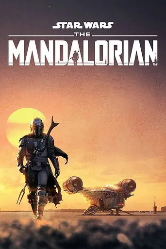

The genetics
Cloning runs as a thread beneath the series' space-Western adventure and fatherhood story. The Client employs a scientist, Dr. Penn Pershing, who is later revealed to work on cloning research. The Imperial remnant hunts Grogu because of his connection to the Force, and in the third season the story reveals that Moff Gideon's aim has always been to create Force-sensitive clones of himself; this goal explains the pursuit of the child that drives the plot from the first episode. Cloning is thus a tool of the villains, sought for power, and it ends with Gideon's defeat in the explosion of his own base. The available sources say little about how the cloning works or about Pershing's own motives. In the wider Star Wars universe, cloning is an established technology (the clone army of the prequel films), and the series uses it in that tradition, as fictional biotechnology rather than as an exploration of real cloning science.
How genetics is portrayed
- Overall portrayal of genetics
- negative Cloning appears only as an instrument of the villain's quest for power, carried out by a scientist in the service of the Imperial remnant, and the heroes' victory consists in stopping it. No practitioner uses genetics for good.
- Outcome of the genetic intervention
- negative The cloning project is what drives the Imperial remnant to hunt and abduct Grogu, setting bounty hunters and Gideon's forces after the child; it brings danger and violence and ends only with Gideon's defeat. No benefit from the cloning work is shown.
- Moff Gideon and the Imperial remnant
- villain Aim: power (negative). Gideon, a ruthless former Imperial security officer leading an Imperial remnant, hunts and captures Grogu to use his connection to the Force, and in season 3 Djarin discovers that his aim has always been to create Force-sensitive clones of himself. He is the series' antagonist, captured in season 2 and defeated by Djarin, Bo-Katan and Grogu in the final battle, caught in the explosion of his own base.
- Dr. Penn Pershing
- neutral Aim: not stated (not applicable). Pershing is a scientist working for the Client (the Imperial remnant) who is later revealed to work on cloning research. The sources say nothing about his own motives or how the series presents him, so his purpose is not stated and the framing is left neutral for lack of evidence.
The story
Five years after the fall of the Galactic Empire, Din Djarin, a lone Mandalorian bounty hunter working in the outer reaches of the galaxy, is hired by Imperial remnant forces, through an enigmatic man known as the Client, to retrieve a Force-sensitive infant of Yoda's species, later named Grogu. Djarin delivers Grogu but then rescues him and goes on the run, hunted by other bounty hunters and by the former Imperial officer Moff Gideon, who wants to use Grogu's connection to the Force. In the second season Djarin seeks the child's kind, the Jedi; Gideon's forces capture Grogu, Djarin and his allies rescue him, and Luke Skywalker takes him to train. In the third season, with Grogu back at his side, Djarin redeems himself on Mandalore, where he and Bo-Katan Kryze learn that Gideon has long aimed to create Force-sensitive clones of himself and defeat him in a final battle.